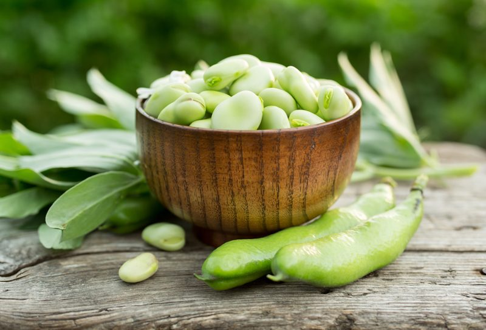
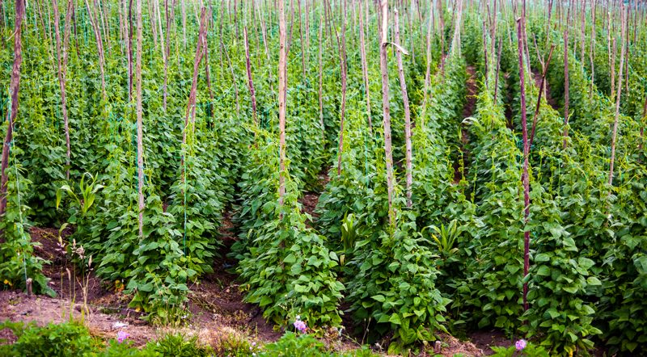
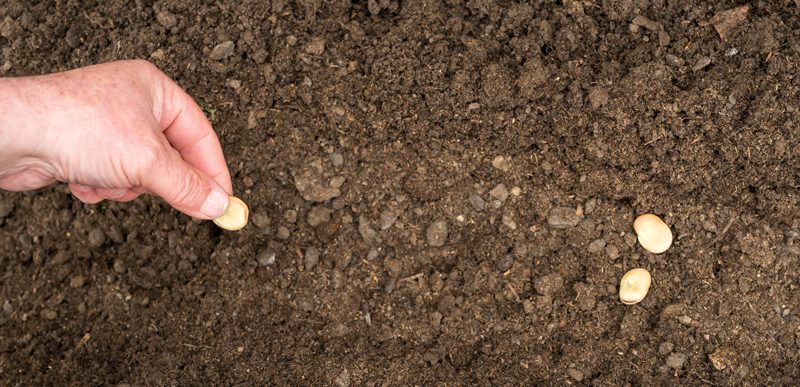

Fava / Broad Bean – Worth all the Work
Hidden inside those fat, long pods are handfuls of delicious beans, but they make you work for it. All good things in life require a little work, and work builds character, right? So think of these as a character building bean! I am not selling this very well, am I? But seriously, despite the seemingly never-ending shucking involved, fava beans have a buttery goodness that you don’t find in other beans, making the toilsome undertaking a true treasure hunt.

Fava beans are also known as broad beans, pigeon beans, horse beans, and Windsor beans. They are the heartiest of beans; they are sturdy, reliable, and versatile. They grow on annual bushes ranging in height from two to seven feet tall. The sprawling plants produce gray-green, pointed leaves and sweetly fragrant, creamy flowers with a purplish blotch, followed by large, green pods in early to mid-summer.

Due to the weight of the bean pod, as it grows, farmers will often support the bush with a wire grid or pole to keep them more erect. Fava beans enjoy the sun and warmth of temperatures that range from 70-80 degrees (F), so once the last frost has past and things start to warm up… it’s time to start planting. They do well in moderately heavy soil that is high in organic matter. They shouldn’t need fertilizing; in fact, too much nitrogen will produce leggy plants with fewer pods. Once planted, the germination takes six to fourteen days at 60 degrees (F). Interested in this process? Click (here) and watch the process in a 45-second video.

The Fava Flower
- Fava bean flowers are open in mid-afternoon and close again at dusk.
- The flower is all about pollination. It can pollinate itself a little bit but often relies on bees to help get the job done.
- As the flower withers, you’ll notice tiny little beans replacing them, which eventually grow into long, dense, bright green pods.
- The pods develop on the bottom of the plant first, so that’s where you’ll find them in the beginning.
- As the plant continues to grow, more beans will appear, continuing to work their way upwards.
The Mighty Fava Bean Pod
- The large-seeded varieties bear one or two pods at each node while the small-seeded types produce two to five pods.
- The pods produced are up to eighteen inches long.
- They contain three to twelve large beans.
- There are about fifteen pods per stalk on the large types and sixty pods on plants of the small-seeded varieties.
Harvesting / Shucking
Harvesting
- The average time for harvesting broad beans is three to four months after sowing. Harvesting should be done at least twice a week, and you should pick your beans from the bottom as these are ready first.
- Select the pods when they are green, thick, and have a glossy sheen. These should be well-filled with large beans.
- When they’re ripe for the picking, just twist them off the stems rather than pulling which will prevent an accidental stem snapping.
- If broad beans are to be eaten fresh, they can be either picked when immature and the whole pod is sliced and steamed together with the tender green leaf tops, or they can be picked later after the seed pods begin to swell.
- When the crop has finished bearing, cut off the stems, add them to your compost heap and then dig the roots back into the soil, to take advantage of the nitrogen-rich roots that will enrich your soil.
- If you have goats or cows, the spent plants make excellent livestock feed.
Shucking
- HeeHaw! Get your bib overalls on because we are going to start shucking!
- For preparation to cook, remove beans from the pods and then hull the beans. The hull is the thin outer coat (pericarp) around each seed.
- To start shucking the bean, start at the pointy end of the pod and snap back the tip with your finger.
- Peel back the string until the pod is completely split along its seam. Think of it as a zipper.
- Once the pod is split open, you’ll find a row of beans inside, don’t be tempted to eat them just yet. Each bean is covered with a thick, waxy shell that you have to shuck to get to the goods. The easiest way to do this is to parboil the beans for no more than a minute.
- Strain them, then dunk the beans into an ice water bath to stop them from cooking.
- You may notice that some of the outer shells (now a dull grayish-green) have started to split open, revealing vibrant green beans inside.
- Now that the shells are soft and pliable, it’s quite simple to squeeze the sides and pop out the bean.
- Shew, now we are ready to use them.
Eating them Raw and Cooked – it’s all about timing
- Unripe seeds (young favas) can be eaten raw when still tender. At this stage, they can also be steamed, puréed, or sautéed.
- Mature favas should be cooked before eating.
- Dry beans need to cook a long time, so add to soup or stew for best results.
- Dry beans of small-seeded varieties can be popped like popcorn and salted.
- The young leaves are pale green, tender and delicious. They are ready to eat right off the plant with a sweet and nutty flavor and can be used like spinach.
How the Fava Bean is Used
- This plant is used as livestock and poultry feed.
- They are also planted as a cover crop. One plant per square foot is recommended. This is equal to 195 pounds of seed per acre for large varieties and 79 pounds of seed per acre for the small varieties. Fava beans have one of the highest rates of nitrogen-fixing of any cover crop. They also produce one of the highest rates of compostable organic material per square meter.
- Enjoyed as either a green or dry vegetable which is grown through February and March in California.
- It is also used as a coffee extender when roasted and ground.
- The dry beans are about 24% protein, 2% fat, and 50% carbohydrate, and have 700 calories per cup.
Do you have Favism?
Favism is an inherited disorder of certain individuals, particularly of southern European origin. These people have an enzyme deficiency expressed when fava beans are eaten, especially raw or partially cooked. Symptoms commonly include acute toxic hepatitis and those similar to influenza. Males are more commonly affected than females; mortality is almost entirely confined to children. Fava plant pollen in the respiratory tract also affects these people. (1)
© AmieSue.com